全场景视频截图参考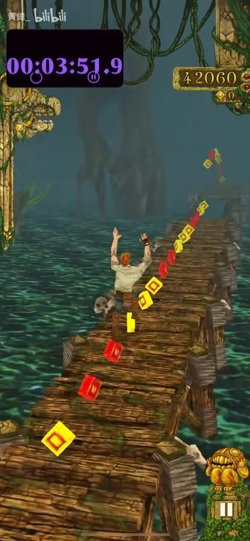
234s · 木桥
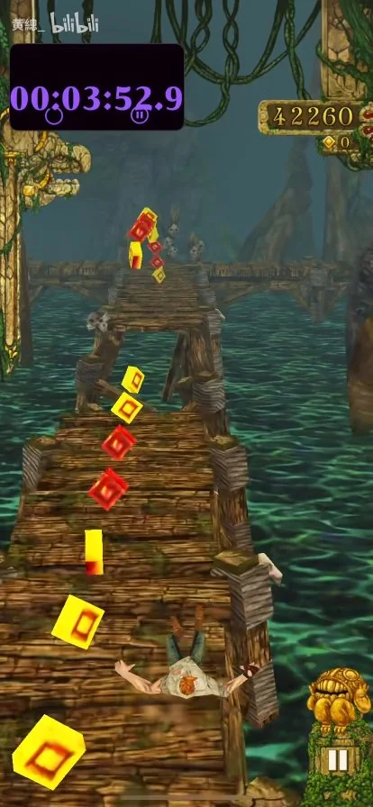
235s · 木桥
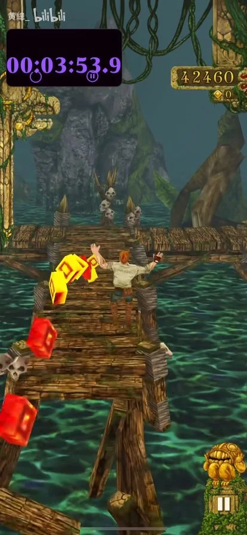
236s · 木桥
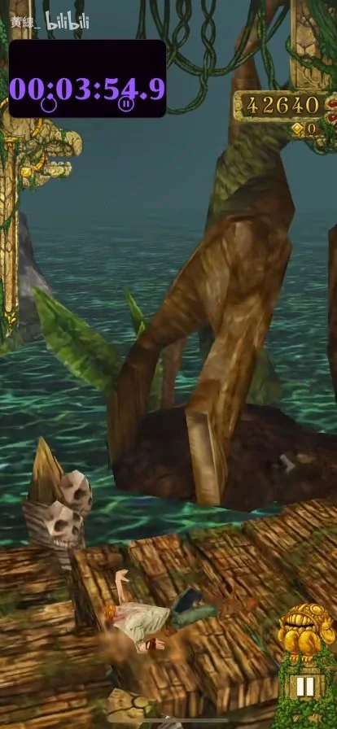
237s · 木桥
木桥外侧巨树与直角转弯。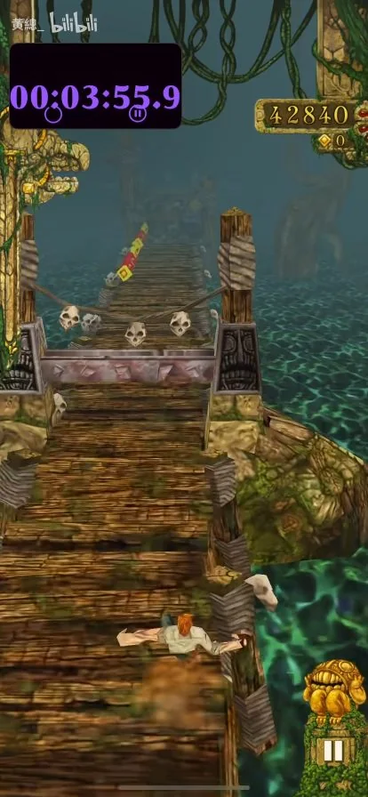
238s · 木桥
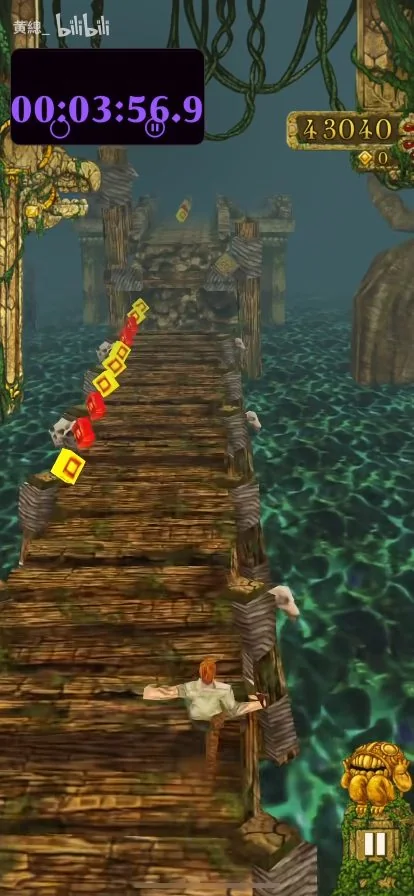
239s · 木桥
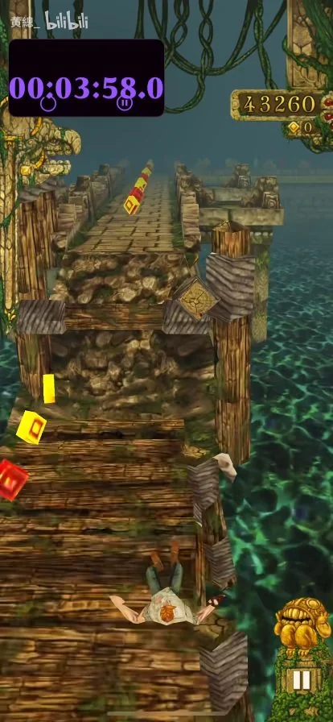
240s · 石桥
木桥结束，前方接石桥。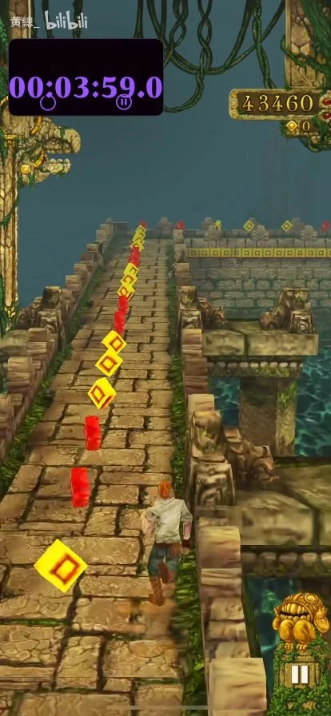
241s · 石桥
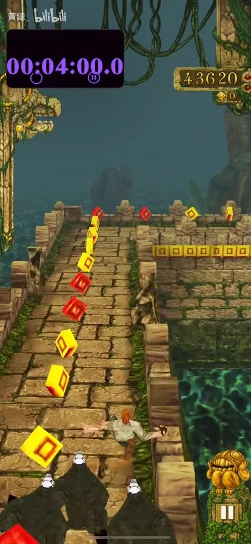
242s · 石桥
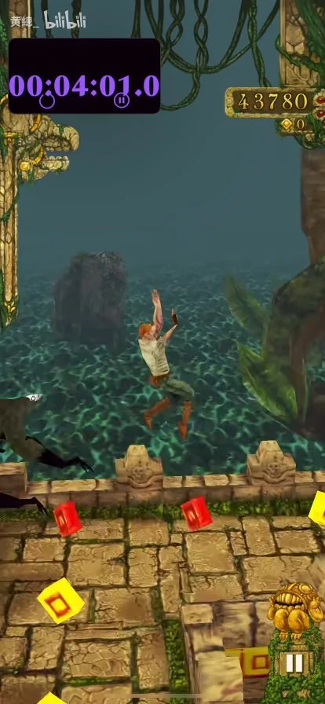
243s · 石桥
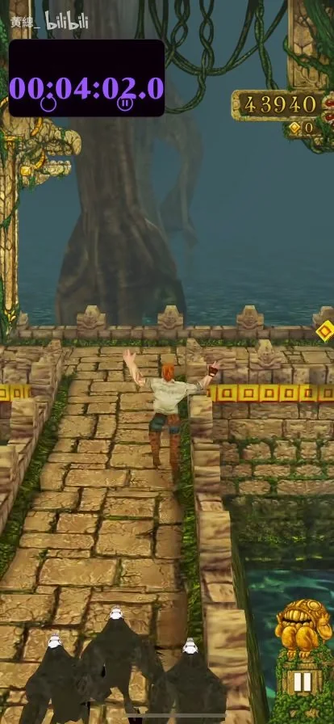
244s · 石桥
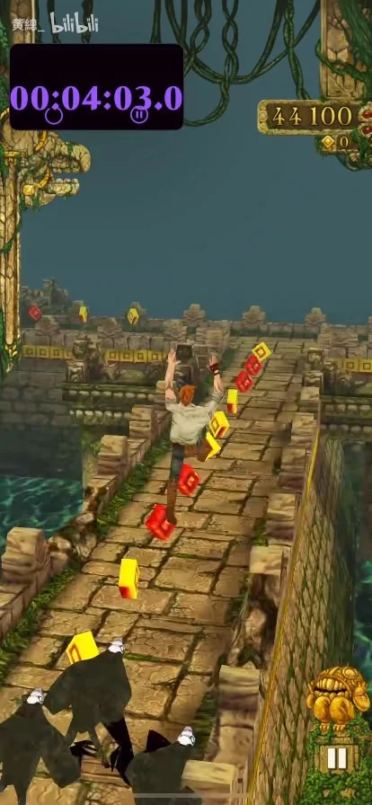
245s · 石桥
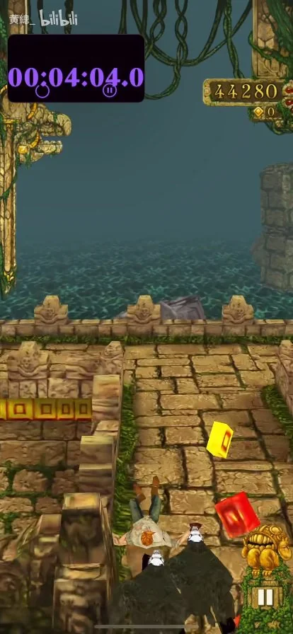
246s · 石桥
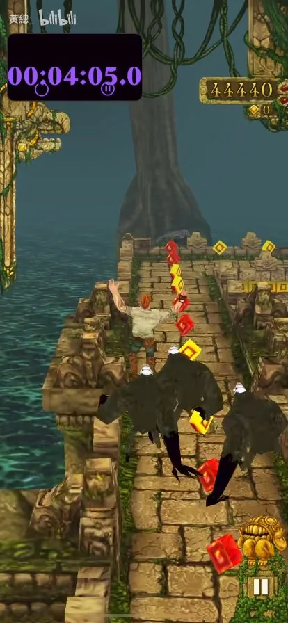
247s · 石桥
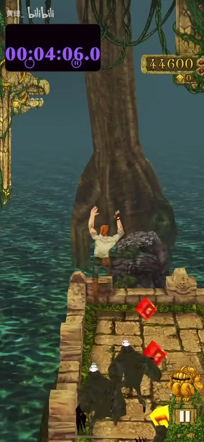
248s · 石桥
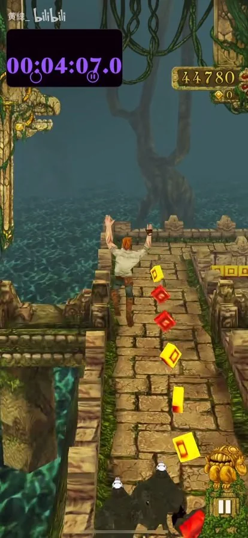
249s · 石桥
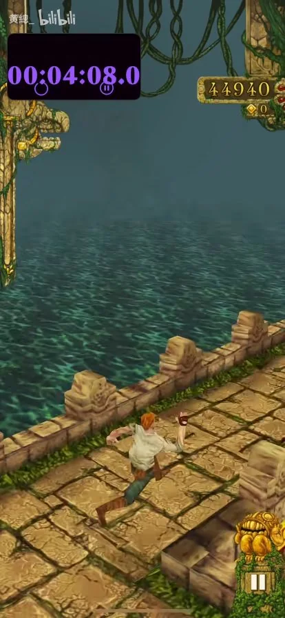
250s · 石桥
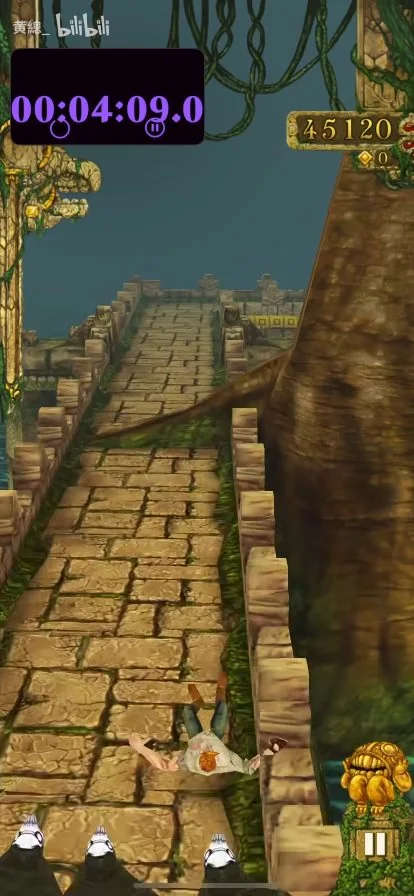
251s · 石桥